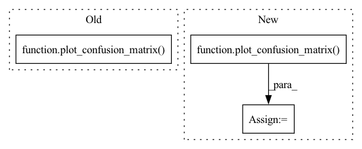

Pattern ID :4959
Before Change
best_accuracy = val_accuracy
// save the model
torch.save(netGaze.state_dict(), os.path.join(args.output_dir, "netGaze.pth"))
plot_confusion_matrix( target_all, pred_all, activity_classes)
return val_accuracy
After Change
pred_all = np.append(pred_all, pred.cpu().numpy())
target_all = np.append(target_all, target.cpu().numpy())
val_accuracy = plot_confusion_matrix( target_all, pred_all, merged_activity_classes)
print("\n------------------------")
print("Validation accuracy = {:.2f}%\n------------------------".format(val_accuracy))
with open(os.path.join(args.output_dir, "logs.txt"), "a") as f:
f.write("\n------------------------\n")In pattern: SUPERPATTERN
Frequency: 3
Non-data size: 3
Instances Fragment ID: 17400283
Project Name: arangesh/gpcyclegan
Commit Name: 2f933af49815bf8bd3a54df9d022facfdb28688f
Time: 2020-09-30
Author: arangesh@ucsd.edu
File Name: gazenet.py
M Class Name: AnonimousClass
N Class Name: AnonimousClass
M Method Name: val(1)
N Method Name: val(1)
M Parent Class:
N Parent Class:
M File Name: gazenet.py
N File Name: gazenet.py
M Start Line: 175
M End Line: 206
N Start Line: 142
N End Line: 156
Before Change
f.write("\n------------------------\nPredicted {} out of {}\n".format(correct, len(test_loader.dataset)))
f.write("Test accuracy = {:.2f}%\n------------------------\n".format(test_accuracy))
plot_confusion_matrix( target_all, pred_all, activity_classes)
return test_accuracy
After Change
pred_all = np.append(pred_all, pred.cpu().numpy())
target_all = np.append(target_all, target.cpu().numpy())
test_accuracy = plot_confusion_matrix( target_all, pred_all, merged_activity_classes, args.output_dir)
print("\n------------------------")
print("Test accuracy = {:.2f}%\n------------------------".format(test_accuracy))
with open(os.path.join(args.output_dir, "logs.txt"), "a") as f:
f.write("\n------------------------\n") Fragment ID: 17400272
Project Name: arangesh/gpcyclegan
Commit Name: 2f933af49815bf8bd3a54df9d022facfdb28688f
Time: 2020-09-30
Author: arangesh@ucsd.edu
File Name: infer.py
M Class Name: AnonimousClass
N Class Name: AnonimousClass
M Method Name: test(2)
N Method Name: test(2)
M Parent Class:
N Parent Class:
M File Name: infer.py
N File Name: infer.py
M Start Line: 129
M End Line: 163
N Start Line: 103
N End Line: 110
Before Change
torch.save(netD_A.state_dict(), os.path.join(args.output_dir, "netD_A.pth"))
torch.save(netD_B.state_dict(), os.path.join(args.output_dir, "netD_B.pth"))
torch.save(netGaze.state_dict(), os.path.join(args.output_dir, "netGaze.pth"))
plot_confusion_matrix( target_all, pred_all, activity_classes)
return val_accuracy
After Change
pred_all = np.append(pred_all, pred.cpu().numpy())
target_all = np.append(target_all, target.cpu().numpy())
val_accuracy = plot_confusion_matrix( target_all, pred_all, merged_activity_classes)
print("\n------------------------")
print("Validation accuracy = {:.2f}%\n------------------------".format(val_accuracy))
with open(os.path.join(args.output_dir, "logs.txt"), "a") as f:
f.write("\n------------------------\n") Fragment ID: 17400275
Project Name: arangesh/gpcyclegan
Commit Name: 2f933af49815bf8bd3a54df9d022facfdb28688f
Time: 2020-09-30
Author: arangesh@ucsd.edu
File Name: gpcyclegan.py
M Class Name: AnonimousClass
N Class Name: AnonimousClass
M Method Name: val(5)
N Method Name: val(5)
M Parent Class:
N Parent Class:
M File Name: gpcyclegan.py
N File Name: gpcyclegan.py
M Start Line: 282
M End Line: 321
N Start Line: 252
N End Line: 270